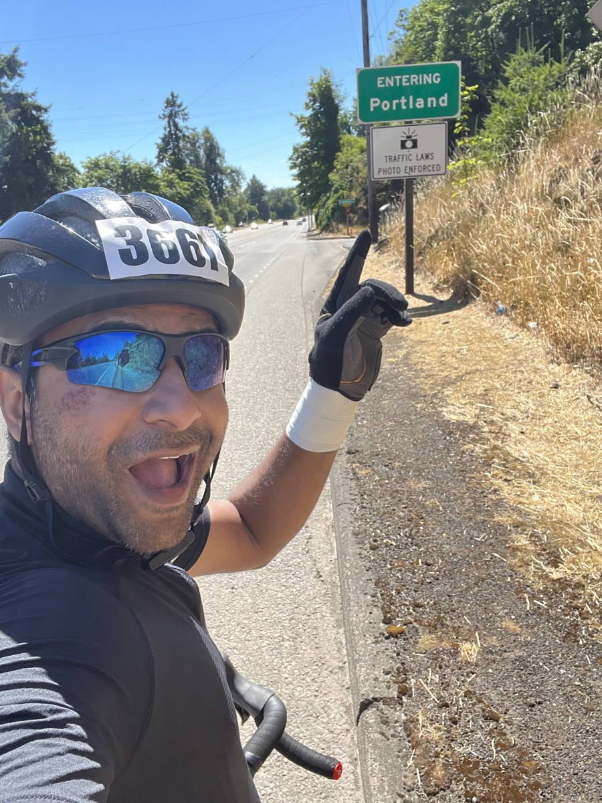

A quick guide on everything you need to know about working with me! My background, values, quirks, what I'm good at and where I'm still growing. This is my personal AP[...]
Hi! I'm Prasanna Kumar, though most people call me Jay. I'm an Engineering Manager at Meta Reality Labs, and I thrive at the intersection of technology and business—specifica[...]
I'm originally from Pondicherry, a quaint coastal town in Southern India that was a French colony until the 1950s. Growing up, I played street cricket like most Indian boys, bu[...]
A quick note on my name: I sometimes go by "Jay" because people find Prasanna difficult to pronounce. While I believe taking the effort to pronounce someone's name correctly sh[...]
I'm married to Nizha, a brilliant and beautiful person who I have the honor of calling my wife. We have three kids: seven-year-old identical twin girls and a one-year-old son. [...]

Built the OS Insights team from scratch to ship Meta VR's telemetry, tracing, and logging infrastructure. Scaled it to handle petabyetes of data at >99% reliability, enabling t[...]
One of the founding engineers building Samsung.com from the ground up. Scaled from building core platform components myself to leading 40+ engineers delivering critical service[...]
Hired as the 5th engineer in Groupon's Chennai center, built core platform services for config management, internationalization, and monitoring that supported 70+ microservices[...]
Built risk analysis services for large underwriters. Foundation in enterprise software and distributed systems.
Great leaders inspire and create energy by setting a vision and aligning everyone to work towards achieving it. This is what I strive for every day. I don't just want people to[...]
Achieving business outcomes is the key purpose for why a team exists. My role as a leader is to drive clarity around this business purpose and build a high-performing team to a[...]
I feel successful when I've brought clarity to a messy situation or when I help my team ship something impactful for the business.
My philosophy: Communication is the biggest part of my job, so I'm deliberate about it. I default to written communication - docs, posts, and structured artifa[...]
In meetings, I'm usually quiet because I'm actively listening and understanding everyone's role in the play. I speak up when asked directly, when the group nee[...]
Feedback: Coaching is verbal and immediate. Sensitive feedback is written for precision but delivered face-to-face, with a heads-up so you're ready to listen a[...]
I know asking for docs can be frustrating at first, but it scales. When people resist, I help by creating a starter doc with structure to make it easier.
I'm good at resolving technical and interpersonal conflicts to move projects forward. I thrive in ambiguous, high-risk/high-reward problems - bringing clarity through data and [...]
Managing up and executive communication. I tend to have deep technical understanding of problems, and communicating context to executives without losing its es[...]
Scaling operational load. I sometimes take on operational tasks (tracking data, communications) to let my team focus on technical design and building systems. [...]
Think beyond yourself. Stellar performance means caring about the team and org, not just your own tasks. Help solve problems even when you're not explicitly in[...]
Be proactive, not passive. If you're waiting to be told what to do, you're not doing a great job. Seek out information and ask questions proactively. If you're[...]
Practice radical candor. I follow radical candor and expect the same from you. Give me hard feedback without beating around the bush. I'm not perfect and I mak[...]
Communicate in structured ways. I expect you to write docs and use structured artifacts. If you struggle with blank-page syndrome, I'll create scaffolds - team[...]
High autonomy with over-alignment. I expect you to work with a very high level of autonomy, but with over-alignment across stakeholders. I like building tightl[...]
My philosophy: I follow radical candor. I give continuous feedback, not just in 1:1s, but I'm focused - usually 1-2 positive items and 1 constructive item, not[...]
I always start with the positive. Before giving critical feedback, I deliberately talk about positive things or thank you for something you did well. People li[...]
I tailor feedback to you: For junior folks, I'm more prescriptive. For senior folks, I give room to come up with your own response while supporting whatever yo[...]
Public vs. private: I praise publicly and criticize privately. Challenge or debate me in meetings (without derailing the agenda), but save personal feedback fo[...]
How to give ME feedback: Be straight and start with what I'm not doing well, then provide context by explaining the situation and my behavior. The sooner you c[...]
A job not well done. Compromising on quality, not thinking through repercussions, and leaving a mess for others to clean up. This shows you don't care about yo[...]
Saying you'll do something and not doing it on time. Delays happen - I'm okay with that. But manage it upfront. Don't let me find out at the deadline that some[...]
Lack of ownership. When people pass things along saying "not my problem" and don't show up for their team, it drives me nuts. We're a team - we need to look ou[...]
I nudge about document hygiene. I might nudge you often to maintain proper document hygiene - resolving comments if they've been addressed, recording sign-offs[...]
I ask for data even when you have strong opinions. It's not because I don't believe in your expertise - I do. But I want to form my own opinion, and data is th[...]